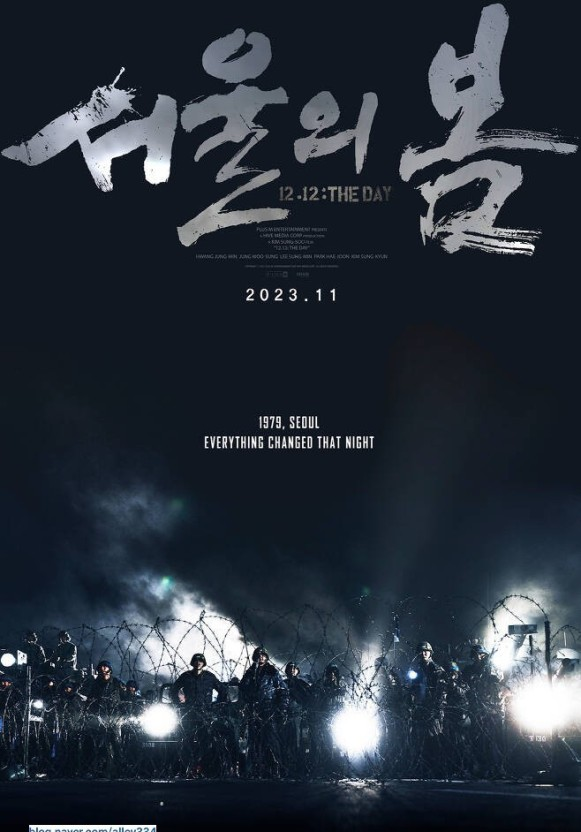

| 순위 | 제목 | 포스터 | 줄거리 | 바로가기 |
| 1 | 어벤져스 1 | 지구의 안보가 위협당하는 위기의 상황에서 슈퍼히어로들을 불러모아 세상을 구하는, 일명 [어벤져스] 작전. 에너지원 ‘큐브’를 이용한 적의 등장으로 인류가 위험에 처하자 국제평화유지기구인 쉴드 (S.H.I.E.L.D)의 국장 닉 퓨리(사무엘 L.잭슨)는 [어벤져스] 작전을 위해 전 세계에 흩어져 있던 슈퍼히어로들을 찾아나선다 | 클릭 | |
| 2 | 설국열차 | 기상 이변으로 모든 것이 꽁꽁 얼어붙은 지구. 살아남은 사람들을 태운 기차 한 대가 끝없이 궤도를 달리고 있다. 춥고 배고픈 사람들이 바글대는 빈민굴 같은 맨 뒤쪽의 꼬리칸, 그리고 선택된 사람들이 술과 마약까지 즐기며 호화로운 객실을 뒹굴고 있는 앞쪽칸 | 클릭 | |
| 3 | 기생충 | 전원백수로 살 길 막막하지만 사이는 좋은 기택(송강호) 가족. 장남 기우(최우식)에게 명문대생 친구가 연결시켜 준 고액 과외 자리는 모처럼 싹튼 고정수입의 희망이다. 온 가족의 도움과 기대 속에 박사장(이선균) 집으로 향하는 기우. | 클릭 | |
| 4 | 서울의 봄 |  | 1979년 12월 12일, 수도 서울 군사반란 발생 그날, 대한민국의 운명이 바뀌었다 대한민국을 뒤흔든 10월 26일 이후, 서울에 새로운 바람이 불어온 것도 잠시 12월 12일, 보안사령관 전두광이 반란을 일으키고 군 내 사조직을 총동원하여 최전선의 전방부대까지 서울로 불러들인다 | 클릭 |
| 5 | 스파이더맨 노 웨이 홈 | ‘미스테리오’의 계략으로 세상에 정체가 탄로난 스파이더맨 ‘피터 파커’는 하루 아침에 평범한 일상을 잃게 된다. 문제를 해결하기 위해 ‘닥터 스트레인지’를 찾아가 도움을 청하지만 뜻하지 않게 멀티버스가 열리면서 각기 다른 차원의 불청객들이 나타난다. | 클릭 |